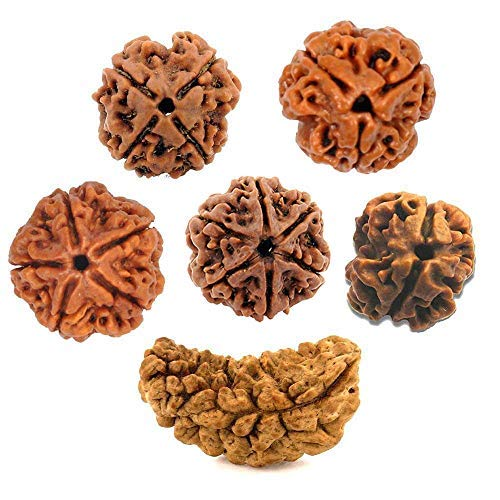
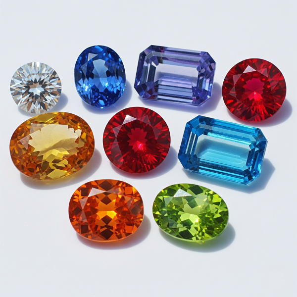
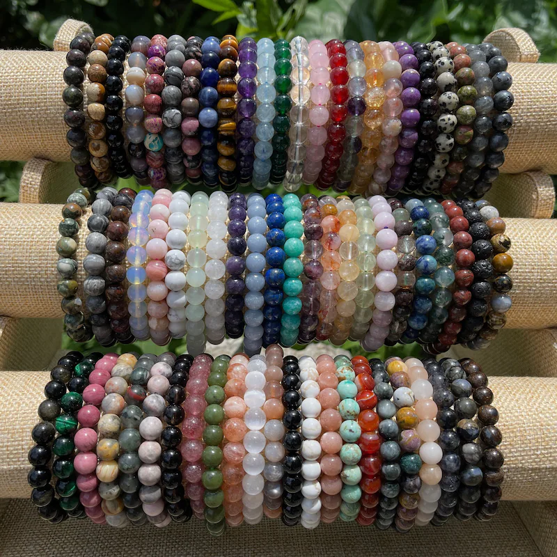
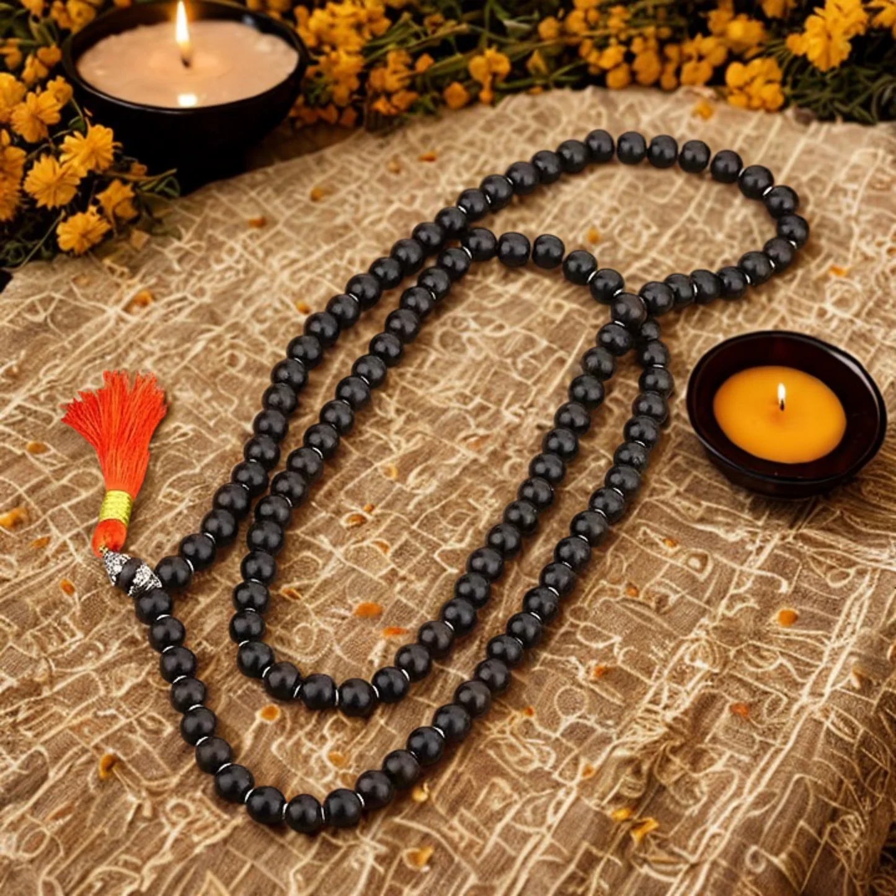
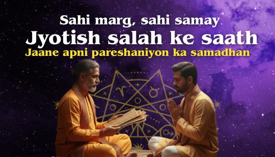

Explore paths to inner peace, wisdom, and spiritual growth through our carefully curated categories.

Rudraksha
Gemstones
Braslet & other
Mala & kavach
Discover the Latest Divine Creations Inspired by Faith and Serenity
Explore All >>
At Aashirwad Rudraksh & Gems, we provide 100% authentic and lab-certified GemStones sourced from trusted suppliers. Each GemStones undergoes strict quality checks to ensure purity, authenticity, and astrological effectiveness. Whether for jewelry or spiritual healing, our GemStones collection is designed to meet every need with trust and transparency.
At Aashirwad Rudraksh & Gems, we provide 100% authentic and lab-certified GemStones sourced from trusted suppliers. Each GemStones undergoes strict quality checks to ensure purity, authenticity, and astrological effectiveness. Whether for jewelry or spiritual healing, our GemStones collection is designed to meet every need with trust and transparency.
All our GemStones and Rudraksha are tested and certified by trusted laboratories, ensuring purity, authenticity, and quality.
We provide encrypted and secure payment gateways so your transactions remain completely safe and protected.
We deliver across India with fast, reliable shipping while maintaining the highest standards of packaging and care.
Ashirwad Rudraksh & Gems is an online store offering a wide range of spiritual products designed to enhance your spiritual practice and inner well-being. From Rudraksha beads to GemStones and sacred yantras, every item is chosen with care and devotion.
We specialize in authentic and high-quality spiritual items sourced from trusted vendors. Each product is crafted to serve a specific spiritual purpose and comes with detailed descriptions to help you make an informed purchase.
Whether you are looking for Rudraksha beads for daily chanting, yantras for your home altar, or spiritual jewelry like Kadas and Bracelets, Ashirwad Rudraksh & Gems offers a meaningful collection to support your spiritual journey.
Carefully sourced products ensuring authenticity and purity.
Rudraksha, GemStones, yantras, idols, and spiritual jewelry.
All GemStones and spiritual items are laboratory certified.
Our experienced team is always available to assist you.
Everything you need to know about spiritual items
Spiritual items are sacred tools used for meditation, prayer, protection, healing, and spiritual growth. They help align your energy with positivity and higher consciousness.
Rudraksha beads are sacred seeds from the Rudraksha tree, widely used in Hinduism for chanting and meditation. They are believed to reduce stress, improve focus, and promote overall well-being.
We offer a wide range of GemStones including diamonds, emeralds, rubies, sapphires, topaz, amethyst, aquamarine, garnet, opal, peridot, tourmaline, and more—carefully selected for quality and beauty.
Gemstones have been used for centuries to balance energy, promote emotional stability, and support physical healing when worn or used during meditation.
Yantras are sacred geometric diagrams used in meditation and spiritual practices to help channel divine energy and enhance inner awareness. They are considered powerful spiritual tools that aid in connecting with higher consciousness and focusing the mind.
Traditionally, Yantras are crafted using materials such as copper, silver, gold, or paper and may be engraved, painted, or printed. Each Yantra is associated with a specific deity or spiritual force and is believed to embody the energy and essence of that divine power.
The significance of Yantras lies in their ability to promote mental clarity, inner peace, harmony, and spiritual balance. Meditating on or placing a Yantra in one’s home or sacred space is believed to remove negative energies, attract positivity, and support spiritual growth.
Yantras are also widely used in rituals, prayers, and ceremonies and are often kept in homes, temples, and workplaces as decorative yet sacred symbols. They are revered not only for their spiritual benefits but also for their artistic and cultural value.
Overall, Yantras play an integral role in many spiritual traditions, helping individuals align with divine energies, deepen their meditation practice, and unlock their inner potential.
Yantras are powerful tools in Hinduism that are believed to have divine energy and can enhance various aspects of life. Yantras are geometric designs that are used for meditation and concentration. To use Yantras to enhance your life, you can follow these simple steps:
1. Choose a Yantra that resonates with your intentions or desires. Each Yantra has a specific purpose, so it's important to choose one that aligns with your needs.
2. Place the Yantra in a clean and sacred space, such as an altar or a meditation room.
3. Sit in front of the Yantra and focus on its design. You can also chant the corresponding mantra for the Yantra to enhance its energy.
4. Visualize your intentions or desires as you meditate on the Yantra. Allow yourself to feel the energy of the Yantra and its ability to manifest your desires.
5. Repeat this practice daily, preferably in the morning or evening for at least 15-20 minutes.
Yantras can be used to enhance various aspects of life such as prosperity, health, relationships, and spiritual growth. By incorporating Yantras into your daily practice, you can tap into their divine energy and manifest positive changes in your life.
The black horse shoe is considered auspicious in many cultures and traditions. It is believed to bring good luck and protect against evil forces. The horseshoe is usually hung above the entrance of a house or a business to ward off negative energy and bring prosperity. The black color of the horseshoe is also believed to absorb negative energy and protect against the evil eye. This ancient belief has been passed down through generations and is still considered important in many parts of the world.
The black horse shoe is considered auspicious in many cultures and traditions. It is believed to bring good luck and protect against evil forces. The horseshoe is usually hung above the entrance of a house or a business to ward off negative energy and bring prosperity. The black color of the horseshoe is also believed to absorb negative energy and protect against the evil eye. This ancient belief has been passed down through generations and is still considered important in many parts of the world.
Black horse shoes have been a symbol of good luck for centuries. In various cultures, they are believed to bring protection, prosperity, and ward off evil. To use a black horse shoe for your benefit, you may consider placing it in a specific location such as above your door or in your office to attract positive energy and luck. Some people also carry a small black horse shoe in their wallet or purse for good luck. However, it's important to keep in mind that the effectiveness of any good luck charm ultimately depends on your own beliefs and actions. So while a black horse shoe may bring good luck, it's important to also work towards your goals and maintain a positive attitude.
Anyone can buy products from Hare Krishna Mart. We have clients across India and we currently ship to all Indian locations.
Yes, you can track your order after it is shipped. We will provide you with a tracking number so that you can keep a check on your delivery status.
We aim to deliver all orders within 5-7 working days from the date of dispatch. However, the delivery time may vary depending on your location.
Multi-quantity order is not eligible for return
We have a hassle-free return policy. If you are not satisfied with the product, you can return it within 7 days of delivery.
However, the product should be in its original condition.
"In case of Return 100 rupees amount will be deducted from the refund amount for the courier charges "
You can contact us through our website or via email/phone. Our customer support team is always ready to assist you with any queries.